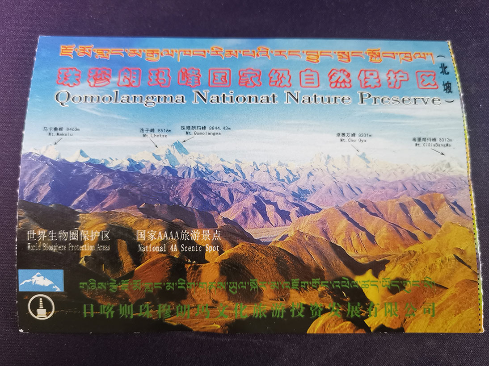

2021/06/17-2021/06/24，在西藏进行了为期一周的旅行。我将从经验和记录两个方面来讲述在这一次旅行，希望能够给想要去西藏的同学们一些帮助，同时分享一些拍到的好图和经历过的有趣的事。

经验篇
高原反应
重点地区海拔
- 林芝，3100m
- 拉萨，3600m
- 日喀则，3800m
- 羊湖，4400m
- 珠峰大本营，4900m
- 阿里地区，平均 4500m
高原反应因人而异，我们五人同行最后都成功在珠峰大本营过夜，也从群友那边听说了不少失败案例，从扛不住到抬下来住院都有。在这一点上最好放平心态，没有必要觉得上高原就会性命攸关，至少人在拉萨顶不住了，能让你吸着氧下来。
第一天过去不能洗澡，这个应该旅店老板都会提醒，几乎所有的旅游攻略也会讲。
高原反应一般不会突发，我在下飞机的时候活蹦乱跳，直到当天晚上才开始出现轻微症状（头晕），应急药物可以在拉萨购买，那边药店非常多。
有条件的同学可以关注心率和血氧这两个指标，刚去时心率会明显上升，我上升到了 110-120 之间。
一般去珠峰大本营过夜之后，高原反应就会消失，经过海拔 4900 米的锻炼，你的身体已经是高原的形状了！
在高海拔的情况下继续上升是一种挑战，一般去珠峰前一天都会在日喀则进行休整，日喀则的海拔是 3800m。我们的路线是 拉萨-羊湖-日喀则-珠峰大本营，上珠峰大本营的感受比较类似从拉萨到羊湖。如果从拉萨到羊湖没有很严重的反应（去羊湖会越过五千米的高山，可以在山顶拍照并感受一下身体状况），那么去大本营的问题也不大。
要买什么药物、多少氧气，这点请自行判断，我们按照每人一罐（35 元）的额度准备去珠峰大本营的氧气，最后剩下了一半多。如果状态好，在珠峰大本营并不需要吸氧。另外上面有 800 元吸一晚的服务，不需要过于紧张。
最后说一点克服高反的经验，高反是可以克服和适应的，如果没有严重到卧床不起的程度，就尽量少吸氧、尽量出去玩，活动一天之后往往状态都会变好。
路线
常见的旅行路线有三条。
- 拉萨-林芝，1 周
- 拉萨-羊湖/纳木错湖-珠峰，1 周
- 拉萨-珠峰-阿里，2 周
在拉萨高原反应严重的同学，可以考虑第一条路线，林芝海拔三千出头，和青海湖相近，绝大部分人都没有问题。
如果在拉萨反应不大，在羊湖也可以坚持，那么可以考虑珠峰路线，至于平均海拔 4500m 的阿里，从珠峰下来后应该也是可以坚持住的。
珠峰
世界最高峰是西藏最独特的景点之一，自然也有许多人担心高原反应和紫外线的问题，我在珠峰也见到不少氧气不能停的游客。
来到珠峰的人普遍都很兴奋、很亲和，我们穿上毕业服被人一路打招呼。大概也能理解这种情怀吧，能跑到这种地方来的，又有几个正常人呢？当感受到我们都是大自然前的蚂蚁时，自然也会对彼此多些友善。
珠峰前有一片拍照用的石子路广场，肯定有许多人在那排队和石碑合照的，日落时分的风很大，穿好衣服可以拍落日的延时，运气好能看到珠峰金顶。
摄影指南
我的 sd 卡在回来前一天，拷数据的过程中损坏了。虽然在写这篇文章的时候，我已经恢复好了里面的数据，但丢数据还是挺慌的。
如果相机支持，建议多插张卡开启双写。
在西藏摄影也是件看脸的事情，我们在拉萨的两天天气相对较好，从去日喀则开始，白天的云很厚。在上珠峰和离开珠峰的时候，都没能在加乌拉山口（珠峰门票上的）看到五连雪山。
高原气候会加剧体力消耗，尤其是某些重量级长焦，在离开拉萨去羊湖，登上 5000 米观景台时，我就因此累出高反。
带三脚架，不管是星空、日出日落，在西藏拍延时绝对是最容易出片的方案之一。
多带一块电池，如果没有住正经宾馆（比如珠峰住帐篷）的话，可能做不到每晚充电。
西藏夜晚天气变化极大，尤其是 6 月底进入雨季之后，可能十二点还乌云密闭，三四点就漫天繁星了，如果想拍星空，建议每个小时起来看一眼天气（或者四五月进藏），辛苦一下不后悔。
星空
西藏几乎没有光污染，再加上空气稀薄，观测星空的效果相当好，需要考虑的困难有：
- 云
- 路灯
- 过路车
西藏的旅游旺季从六月开始，七八月达到高潮，但是雨季带来的影响使得云成为了星空观赏和摄影的困难，这点只能靠脸和熬夜等待。
路灯不仅是光污染，对地景的影响更大，如果愿意熬到后半夜，路灯会关闭。
过路车是通宵开不停的！我们在羊湖时住在湖边帐篷里，听了一夜泥头车的呼啸声。但是珠峰大本营没有车半夜开的，可以尽情拍摄。
保暖
这里以六月的气温来说明，在拉萨，短袖加外套（防晒）就可以了，虽然很热，但是不会出很多汗。
但是西藏的半夜很冷，如果要拍星空的话，一定要穿上羽绒服和秋裤。在珠峰大本营时，两侧高山夹住远处的珠峰，形成了天然的风道，风大到能吹动三脚架。
防晒
回来后觉得这个问题是事先多虑了，西藏地广人稀，在出了拉萨之后，一天的大部分时间都在车里，根本没多少机会晒到太阳。
边防证
边防证是一个很简单的证件，十分钟左右即可，但是需要在户籍所在地办理，否则需要居住证。在不方便本地办理的情况下，某些地区提供了远程办理后邮寄的服务，只需要网上申请即可。边防证也可以在拉萨用身份证办理，但是需要给当地旅行社交钱。